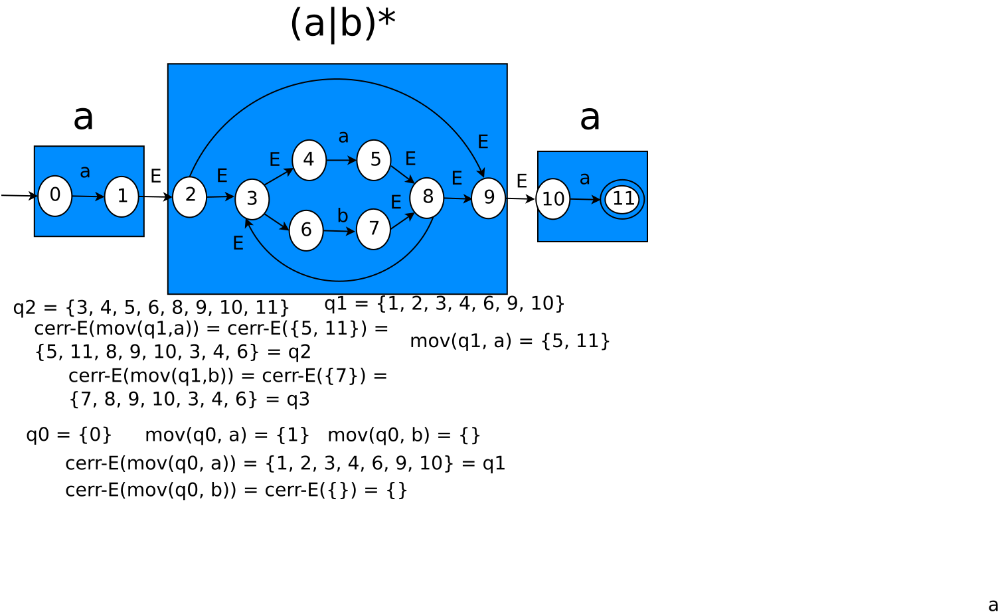
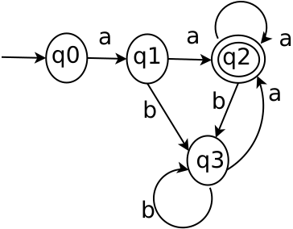

Diagrama a bloques del proceso de construcción de un analizador léxico
Para hacer la conversión de ER a AFN. Se usa la construcción de Thompson:

Algoritmo de subconjuntos (Ejercicio 1)
Convertir la ER en autómata AFD:
a(a|b)* a
La ER se convierte en AFN aplicando los modelos de Thompson de las ERs, como sigue:

Convertir el autómata AFN de la ER anterior, en AFD. Al AFN de la figura siguiente, se le aplica el algoritmo de subconjuntos:
q0 = {0}
Movimiento para el estado q1:
cerradura-ε(mov(q1, a)) = cerr-ε({5, 11}) = {5, 11, 8, 9, 10, 3, 4, 6} = q2
cerr-ε(mov(q1, b)) = cerr-ε({7}) = {7, 8, 9, 10, 3, 4, 6} = q3
q1 = {1, 2, 3, 4, 6, 9, 10}
Movimiento para el estado q2:
cerr-ε(mov(q2, a)) = cerr-ε({5, 11}) = {5, 11, 8, 9, 10, 3, 4, 6} = q2
cerr-ε(mov(q2, b)) = cerr-ε({7}) = {7, 8, 9, 10, 3, 4, 6} = q3
q2 = {3, 4, 5, 6, 8, 9, 10, 11}
Movimiento para el estado q3:
cerr-ε(mov(q3, a)) = cerr-ε({5, 11}) = {5, 11, 8, 9, 10, 3, 4, 6} = q2
cerr-ε(mov(q3, b)) = cerr-ε({7}) = {7, 8, 9, 10, 3, 4, 6} = q3
q3 = {3, 4, 6, 7, 8, 9, 10}
